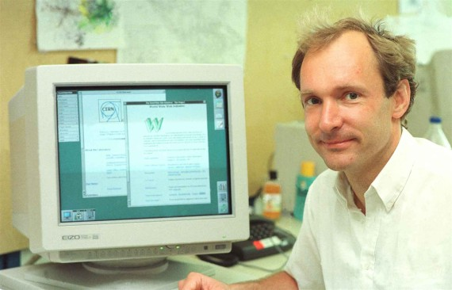

El principal creador de la World Wide Web fue Tim Berners-Lee, que en aquella época trabajaba en el CERN. Lo que le inspiró su creación fue ver cómo físicos de todo el mundo se reunían para debatir cuestiones científicas en los edificios del CERN.
Tim Berners-Lee ya tenía la idea de la World Wide Web. Timpropuso al CERN trabajar en un sistema para compartir información y resultados de los experimentos del centro. Impreciso, pero emocionante fue la respuesta de su supervisor. Con esa ambigüa luz verde, siguió trabajando y el 12 de noviembre de 1990 publicó un informe detallado sobre su proyecto, que ya se encontraba en un ‘avanzado estado de gestación’. Así, tras un rápido desarrollo final de poco más de un mes, el 20 de diciembre de ese año Berners-Lee puso en marcha el primer servidor web y la primera página web del mundo. Y, tras un proceso de refinamiento y pruebas, la primera versión pública del software debutó el 6 de agosto de 1991.
A Tim se le otorgo en el año 2016 el premio Turing por haber creado lo que hoy en día es la World Wide Web. Estos premios son conocidos como el “Premio Nóbel de las Ciencias de la Computación” .